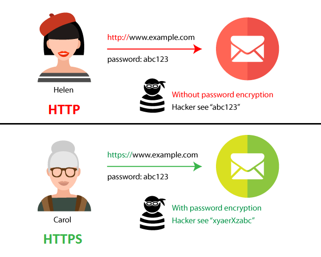

HTTP & HTTPS
HTTP, also known as “Hypertext transfer Protocol”, controls the sending and receiving of web files. It is the language that the computer uses to ask another device/server for data. The conversation between the two is mostly made of GET requests. However, the information send via HTTP is not secure as it consists of plain text that can easily be obtained by hackers. To prevent this, most websites use a safer version of HTTP which is known as HTTPS, “Hypertext transfer Protocol Secure".
HTTPS scrambles the messages and information sent from both computers so that no one can read it.

HTML
HTML, also known as “Hypertext Mark-up Language”, is the language used by a web browser that defines the structure of a page. It consists of text, images, videos and so much more. In fact this website was made using HTML! The text is directly included in the HTML, but images, videos and other parts, are separate files that need to be requested. All these files create multiple GET requests to the server and the files are displayed as they arrive.

Get request
A GET method "gets" information from its destination server using its URL (Uniform Resource Locator).
A GET request:
- Can be cached
- Remains in the browser history
- Can be bookmarked
- Should never be used when dealing with sensitive data
- Has length restrictions
- Is only used to request data
Post request
The HTTP POST method sends data information to the destination server. The type of the request is shown by the Content-Type header. A POST request is usually sent via a HTML form and results in a change on the server.

A POST request:
- Is never cached
- Does not remain in the browser history
- Cannot be bookmarked
- Doesn't have a limit on data length
Web server
A web server can either mean hardware or software or both working together.
- As hardware, a web server is a computer that stores web server software and a website's component files (html files, images, stylesheets, javascripts files, etc).
- In terms of software, a web server has several parts that control how web users access these hosted files.
Browser
A browser is a program that can access information on the World Wide Web using a search engine. However, there is a significant difference between a browser and a search engine. Through the World Wide Web, a browser connects to a website's server and display its pages. These pages have a specific URL which is used to access the website. A search engine is just a website like DuckDuckGo.com or Google.com that can search on the Internet.
Port 80
Port 80 is the port number used by the protocol HTTP (Hypertext transfer protocol).
Port 443
Port 443 is the port number used by the protocol HTTPS (Hypertext transfer protocol Secure).